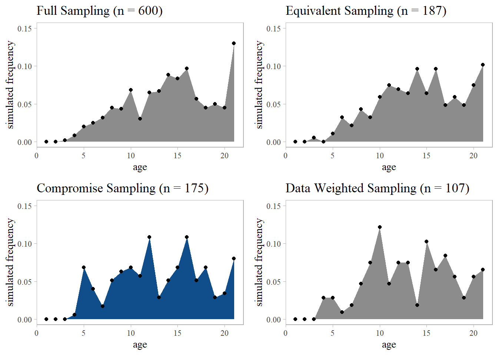
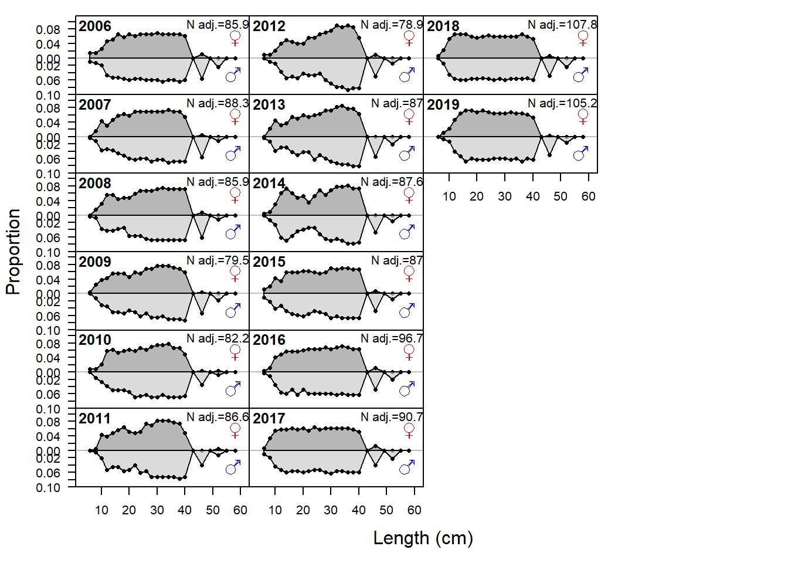
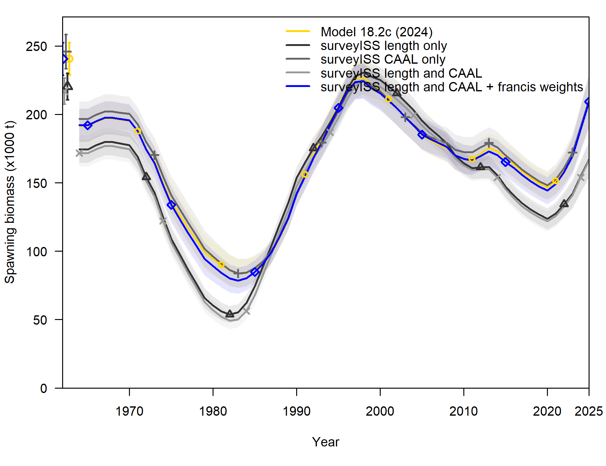
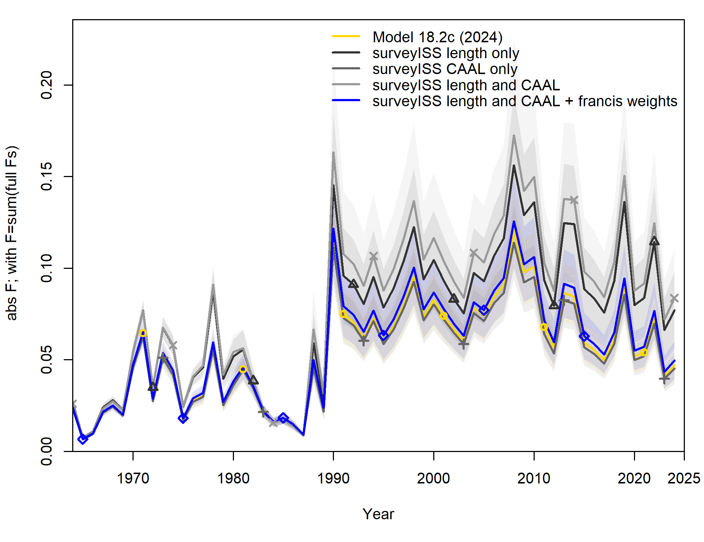
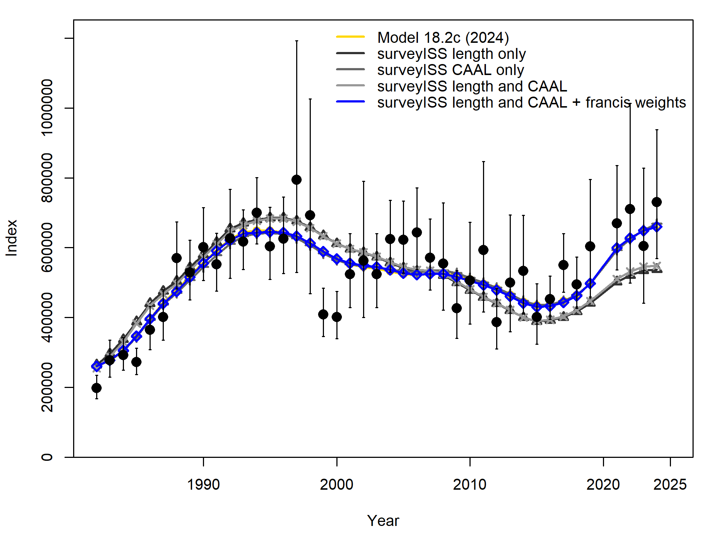
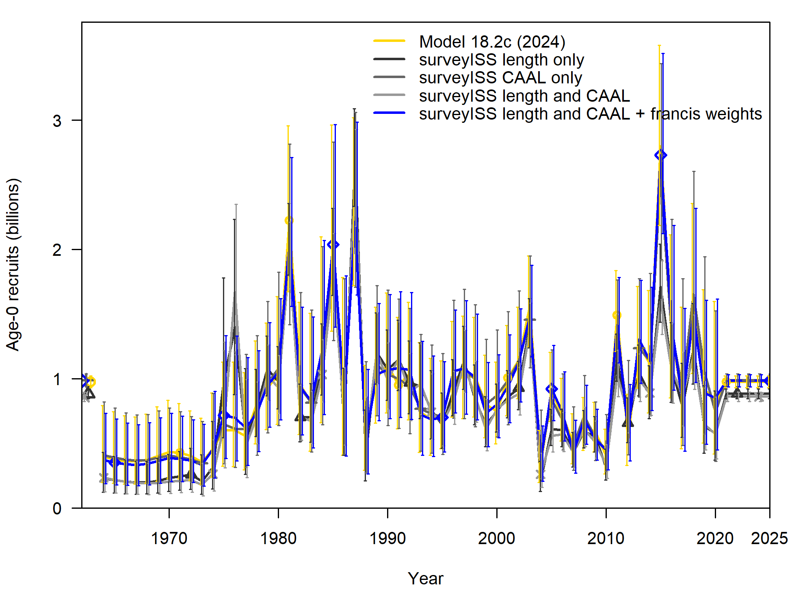

2024 BSAI FHS Bridging Analyses
Overview
This electronic document describes the analyses undertaken to bridge the last “full” assessment of BSAI Flathead Sole (Monnahan, 2020) into the latest Stock Synthesis (SS3) software version, as well as explorations of sequential inclusion of recent data. Note that the author was unable to complete this document before the addition of 2022/2023 survey age data, which were not available in June 2024. Therefore the bridging exercise and conclusions made do not include them (they are included in the model submitted for management).
The general workflow was as follows:
Move the 2020 model, referred to as Model 18.2c (2020), from SS3 version 3.30.16 to the the newest SS3 software version as of December 2023 (3.30.22) downloaded from the NOAA Virtual Lab. Comparisons between model derived quantities and likelihoods given this change are provided in this document.
Compare the historical and newly-pulled data. The “old data pull approach” used code from Drs. McGilliard & Monnahan originating from a local R package entitled
newsbss, which is highly customized and not actively maintained. The “newly-pulled” data are obtained using a combination of theafscdataandgapindexpackages (the former for fishery data, the latter for survey data). This is the preferred approach since these packages are actively maintained and provide a unified approach for many stocks. To confirm things looked right, I ran the 2020 model with only individual (historical) data sources changed, to convince myself that trivial differences in the raw data extraction were indeed trivially impactful.Sequentially bridge the data. Model 18.2c (2020) has catches and fishery length comps through 2020, and everything else through 2019. We added catches through 2023, with an estimate of 2024 catches, then survey abundance indices, then survey lengths, then survey CAALs (marginal ages are ghosted, but included as well), then fishery lengths, then fishery ages. The impact of each of these five steps is documented below. This bridged model, with updated software and data inputs but no structural changes is labeled as Model 18.2c (2024).
Stock Synthesis Software Update 3.30.22
Warnings
Model 18.2c (2020) had generic warnings about the recr_dist method, poor \(F_{MSY}\) convergence, and an issue with the final gradient. Only the latter is of concern. Model 18.2c run with the new SS3 software threw the same warnings as well as an indication that the initial value for parm 11 was greater than the max (999 > 5); this is the end logit parameter for double-normal survey selex (forcing it to be asymptotic). I am comfortable with the consistency of these warnings and clean them up below; the gradient is identical between models (0.0015022).
Likelihood Components
Model 18.2c (2020) Model 18.2c (2020) - software transition Label
1 1.79154e+03 1.79154e+03 TOTAL
2 7.01686e-14 7.01686e-14 Catch
3 2.91819e-04 2.91819e-04 Equil_catch
4 -3.63359e+01 -3.63359e+01 Survey
5 2.11536e+02 2.11536e+02 Length_comp
6 1.61011e+03 1.61011e+03 Age_comp
7 6.22357e+00 6.22357e+00 Recruitment
11 3.35616e-03 3.35616e-03 Parm_softbounds

.png)
SS3 Bridging Conclusion
Based on the above explorations, I am comfortable that moving to the latest SS3 version is not impacting model behavior. After completing this exercise, I addressed the warnings in the latest model via the following:
- Change
recr_dist_methodto 4 (line 17) and removing associated stuff lines 99-101 - Change the
INITfor Age_DblN_end_logit_Survey to 20 and the MAX to 25 to get rid of the bound error. The selectivity is the same.
The warning-free model is in model_runs/18.2c_2020_ss3v33022w. I use this warning-free model to do the data explorations in the next section.
Data Exploration
Big-Picture Data Notes
This section of the script assumes that one has already downloaded and formatted the data one plans to use in the assesssment. To avoid separate scripts doing the same thing, I’m completing that step in R/2024_analysis.R, with a source() call to R/bsai_fhs_wrangle_data. I wrote some functions for the afscdata and afscassess packages that reshape those data frames into the SS3 format, which is also accomplished in that script.
Bering Flounder is not included in the compositional data (consistent with the 2020 assessment).
Age-Read triaging
Due to staffing issues we had to reduce the number of otoliths read for all sources in years 2022 and 2023. After consulting with the Age & Growth team, they indicated they could read a total of about 750 BSAI FHS otoliths this year. This is a considerable reduction (~75%) given that normally we have about 600-800 otoliths for each source (survey and fishery) for each year. We normally read every collected otolith from each source, so there are not historical ratios to use for guidance.
The two alternatives in this situation were to 1) disregard the fishery age-comps from 2022 & 2023 for this assessment, and devote all reading effort to the survey or 2) find a compromise (split) among the two fleets and years that doesn’t amount to simply adding noise to the model.
The figures below illustrate simulated composition data at varying levels of age-reads which I generated to determine the best way forward. We evaluated the resultant datasets based on how distinct they appeared from the full dataset. This is highly rough & dirty. The approach did not account for haul/tow resampling, potential changes in the dynamics, nor impacts on the assessment. Our findings were as follows:
- Simply splitting the 750 otoliths evenly across years & fleets (187 reads each) results in a mis-represented plus group for the survey.
- Based on the data weights in the 2020 model, and the fact that survey CAALs are used to inform growth, it’s intuitively preferable to assign more otolith reads to the survey data. This could range from completely ignoring the fishery data for these years to forming some sort of compromise among the datasets.
- The data weights would suggest that 2.5x the number of otoliths should be read from the survey (equaling 267 survey otoliths per year). This approach results in satisfactory compositions for the survey but not for the fishery.
- A compromise between these two approaches, shown in blue below, where the survey gets 225 age-reads per year, and the fishery gets 175 age-reads per year, result in satisfactory compositions for the survey but risk missing young fish from the fishery.
After considering these results, Dr. Kapur decided in January 2024 to go with the very first option and assign all available reader time to the survey, with the understanding that a) the A&G program could finish reading the leftover fishery otoliths for future assessment years, and b) we don’t expect these simulated datasets to have a strong influence on the terminal derived quantities given that recruitment deviations are set to zero for the last three years.
J. Short then requested I provide a spreadsheet with the sampling routine to get to the ~375 otoliths per year, stating:
You would think that a “random sample” would be a simple thing and mean the same to everyone, but it isn’t and it doesn’t. As you can imagine samples are not evenly distributed and can vary by sex and area. Also the surveys change sampling methods and it isn’t always apparent which one was used. That is why as a policy I insist that the age requestors do the sample selection. It would take me less time to do a random sample of 375 specimens than it would take to write this email but I believe it is worth ensuring we are on the same page. Attached is the specimen data for 2022 and 2023 EBS shelf flathead. Please indicate which ones you would like aged and send it back then I can get it ready for the age readers.
I loaded that spreadsheet and did some EDA. The survey team was instructed to collect otoliths randomly by haul. Reassured by the following tables and figures, I did a simple random sample of the spreadsheet for each year separately without replacement and with no weights applied using sample_n().


# A tibble: 2 × 3
collection_year `1` `2`
<int> <dbl> <dbl>
1 2022 0.428 0.572
2 2023 0.472 0.528
Fishery Catches
Both queries call from the council.comprehensive_blend_ca table. I ran the afscassess::clean_catch() function on the downloaded data, and the summary code for aggregating into tons. The approaches result in consistent catch histories, with the understandable exception of in-year catches for 2020 (which were under-estimated).

Fishery Length Compositions
I was unable to reproduce the fishery and len-comp data using the afscdata approach; the sample sizes were off, and no data were returned < 1982. I think this has to do with foreign fleet availablilty. So, I rebooted the old fishery length comp routine, which calles from OBSINT and NORPAC, and obtained identical input data. The afscdata didn’t really impact the derived quantities, but the fits to the fishery lengths were different enough that I decided to revert methods. Time permitting, I will try to integrate the old approach into the afscdata package.
Fishery Age Compositions
The old datapull script and afscdata both read from norpac.debriefed_spcomp, though the latter reads from mv and the former doesn’t. FMA told us these have the exact same data just in a slightly different format so that should not matter.
Years 1994, 1995 and 1998 are not used in the model as length comp data are available.
The number of hauls is used as the input sample size; these values were recoverable for the age data using the
afscdataapproach, but the values for the length data are fairly different (see figure below). My guess is this has to do with updates to the database and/how filtration happens before compiling the comps.The default
afscdataapproach did not have a means for getting sex-specific values for either comp dataset; I simply added these to the summary calls (ignoring unsexed fish) and reformatting things in SS3.
See the comments on the figures below for more information.


I am satisfied by this exploration that replacing the fishery compositional data with the outputs of afscdata does not have an unreasonable impact on model behavior, even given small changes in the observations.
Survey Biomass Data
From the 2020 SAFE:
“This assessment used a single survey index of”total” Hippoglossoides spp. biomass that included the EBS “standard” survey areas and AI survey areas for the years 1982-2018. Survey biomass for Hippoglossoides spp. in the Aleutian Islands is very small as compared to that from the EBS shelf survey, and survey biomass for Bering flounder is very small as compared to that of flathead sole. A linear regression is used to estimate a relationship between EBS shelf Hippoglossoides spp. survey biomass estimates and AI survey biomass estimates; this relationship is used to estimate AI survey biomass in years when no AI survey occurred (by using the linear equation to find an AI biomass estimate in a particular year based on the EBS biomass estimate for that year).”
Both Dr. Monnohan (per his notes) and I are not thrilled with this approach, since being model-based means that even historical datapoints can change with each new observation (assuming that the output of the lm is used to replace the survey biomass series wholesale, which would be statistically prudent). It’s also odd to me that the survey biomass data include both congeners while the compositional data does not; though it’s important to remember that Bering flounder constitutes about 1% of catches. Finally, SS3 is designed to handle multiple indices, so a sensitivity could be run where these are indeed treated as separate indices (though growth differences would need to be considered).
I confirmed that the raw values for the EBS Shelf and AI that came out of gapindex matched what was done previously (mean and variance); the resultant index (after the linear model) is identical to what was used before.
Survey Compositional Data
Survey CAALs
I went on a long journey to reproduce the survey compositional data, and came to the conclusion that it must be done using the material in the gapindex package, which is more faithful to what was provided in earlier years in the HAEHNR schema. My suspicion is that there is under-the-hood filtration and expansion that afscdata simply can’t handle yet (at least for the BSAI), and going forward it is more sensible that we work with a tool that is maintained by the folks collecting the data.
A deep dive into these issues is undertaken in the Survey Comps Deepdive, and the lessons learned led to the development of a standalone workup script that 1) pulls from gapindex and 2) munges the appropriate sub tables in to the SS3-style compositional data (R/bsai_fhs_wrangle_data.R). This replaces the long and redundant set of code that was developed for 2020. For simplicity, the plots here simply illustrate that we were able to get identical datasets and derived quantities using the new methods.



Survey Marginal Lengths
The input sample sizes are slightly different in the new datapull (from gapindex)

Survey Ages (ghosted)
These aren’t used in the model but I wanted to confirm the pull from gapindex looked reasonable. Annoyingly, the SS3 plots for ghosted values aren’t callable and the zoom is wrong, but these are satisfactory.

Model Bridging
Importantly, the data updates conducted here are holistic, meaning that the entire time series of data for each component (where available) is replaced with what is currently available in the AKFIN database. A comparison between the data used in the last assessment and the latest version of that dataset is provided for each component above. The model that includes each change is named in the relevant header; these are hosted under model_runs/.
Timeseries Prep
Some initial steps are required to model dynamics through the present year. These are as follows: - In the .dat file set the endyr to 2024. - In the starter file set the max yr for sdreport outputs to -1 (endyr+1) - In the .ctl file move the last year of main recdevs to 2020 - In the .ctl file update the last_yr_fullbias_adj_in_MPD to 2019.8 (will tune later in this document) - In the .ctl file update the first_recent_yr_nobias_adj_in_MPD to 2020.3 (will tune later)
To make this section more concise I am simply going to show the comparison plots all at once.
Data bridging (cumulative by data type)
Summary of bridging
Post data, I tuned the rec-dev ramp and did 3 iterations of Francis weighting from scratch. Will re-do this one last time once all the new data are in but this helps us check for consistency.
Fleet Type Previous_Value Updated_Value
1 Fishery Length 0.064561 0.079732
2 Survey Length 0.337024 0.359831
3 Fishery Age 0.116532 0.086647
4 Survey CAAL 0.284172 0.272054
Bridged Operational Update Model, 18.2c (2024)
This is model 18.2c (2024) and represents an “operational update”; the model structure has not been modified, and only the input data have been revised to reflect the current database.
It appears that the recent upswing is actually not due to the survey biomass observations (though they are consistent with the predictions); rather, the high recruitment event estimated in ~2018 is driving stock increases. This is evident in the 2024 model that has only catches.
Comparison with updated surveyISS sample sizes
We explored using the surveyISS r package to generate updated input sample sizes for the survey compositional data (code here.
Here’s how the old values (pink) compare with what comes out of the package (blue). The general reason why the blue values are higher is that there is generally more samples in general than the proxy value used previously (number of hauls), and less variability across hauls than there is across ages and years. This finding (increased ISS with the new package) has been found for other flatfish as well. The values for the CAAL data are much more similar to the nominal sample sizes.
We then bridged in the new sample sizes into model 18.2c (2024) and re-tuned the Francis weights. A detailed exploration of this exercise, with additional figures, is available here. There are some minor differences between the ‘base’ 18.2c (2024) model shown here and the figures above because as of this writing (Oct 2024) the base has been updated with 2024 survey data, survey length comps, and a better estimate of 2024 catch.
The new surveyISS values, particularly the length comps, changed the model trajectory considerably. However, this change was eliminated by a re-tuning of the Francis weights, which greatly reduced the weight assigned to the survey lengths (0.35 to 0.06) and increased the CAAL weight by nearly twofold (0.27 to 0.48). This didn’t result in major changes to the recruitment trajectory, data fits or parameter estimates.
Fleet Type Base_Value Survey_ISS_value
1 Fishery Length 0.079732 0.079018
2 Survey Length 0.359831 0.062439
3 Fishery Age 0.086647 0.085811
4 Survey CAAL 0.272054 0.481957



$SS_version
[1] "3.30.22.00;_safe;_compile_date:_Oct 30 2023;_Stock_Synthesis_by_Richard_Methot_(NOAA)_using_ADMB_13.1"
$SS_versionshort
[1] "3.30"
$SS_versionNumeric
[1] 3.3
$StartTime
[1] "StartTime: Tue Oct 22 08:57:23 2024"
$RunTime
[1] "0 hours, 2 minutes, 15 seconds."
$Files_used
[1] "Data_File: 2024_BSAI_FHS.dat Control_File: BSAI_FHS.ctl"
$log_det_hessian
[1] 308.662
$Final_phase
[1] 3
$N_iterations
[1] 664
$Nwarnings
[1] 5
$warnings
[1] "Note 1 Information: Std_yrmax=-1 in starter, so no variance output for forecast quantities after endyr+1 "
[2] "Warning 1 : poor convergence in Fmsy, final dy/dy2= -0.249698"
[3] "Warning 2 : Fmsy.mey is close to max allowed; check for convergence "
[4] "Note 2 Information: A revised protocol for the Fcast_yr specification is available and recommended."
[5] " 2 warnings and 2 notes "
$likelihoods_used
values lambdas
TOTAL 1.97447e+03 NA
Catch 7.46011e-14 NA
Equil_catch 3.42910e-04 NA
Survey -4.25860e+01 NA
Length_comp 3.02953e+02 NA
Age_comp 1.70808e+03 NA
Recruitment 6.01942e+00 1
InitEQ_Regime 4.99201e-31 1
Forecast_Recruitment 0.00000e+00 1
Parm_priors 0.00000e+00 1
Parm_softbounds 3.22096e-03 NA
Parm_devs 0.00000e+00 1
Crash_Pen 0.00000e+00 1
$likelihoods_laplace
values lambdas
NoBias_corr_Recruitment(info_only) -5.82234 1
Laplace_obj_fun(info_only) 1962.62000 NA
$likelihoods_by_fleet
Label ALL Fishery Survey
175 Catch_lambda NA 1.00000e+00 1.000
176 Catch_like 7.46011e-14 7.46011e-14 0.000
177 Init_equ_lambda NA 1.00000e+00 1.000
178 Init_equ_like 3.42910e-04 3.42910e-04 0.000
179 Surv_lambda NA 0.00000e+00 1.000
180 Surv_like -4.25860e+01 0.00000e+00 -42.586
181 Surv_N_use NA 0.00000e+00 42.000
182 Surv_N_skip NA 0.00000e+00 0.000
183 Length_lambda NA 1.00000e+00 1.000
184 Length_like 3.02953e+02 1.08733e+02 194.220
185 Length_N_use NA 3.30000e+01 42.000
186 Length_N_skip NA 1.70000e+01 0.000
187 Age_lambda NA 1.00000e+00 1.000
188 Age_like 1.70808e+03 5.68343e+01 1651.240
189 Age_N_use NA 1.90000e+01 1150.000
190 Age_N_skip NA 3.00000e+00 30.000
$N_estimated_parameters
[1] 82
$table_of_phases
-99 -4 -3 -2 -1 1 2 3
2 5 15 1 2 10 70 2
$estimated_non_dev_parameters
Value Phase Min Max
L_at_Amin_Fem_GP_1 14.3321000 1 2.00000 30.0000
L_at_Amax_Fem_GP_1 45.3240000 1 25.00000 80.0000
VonBert_K_Fem_GP_1 0.1379980 1 0.01000 2.0000
CV_young_Fem_GP_1 0.1135210 2 0.00100 0.3000
CV_old_Fem_GP_1 0.0858496 2 0.00100 0.3000
L_at_Amin_Mal_GP_1 14.1463000 1 1.00000 45.0000
L_at_Amax_Mal_GP_1 37.8865000 1 20.00000 70.0000
VonBert_K_Mal_GP_1 0.2120090 1 0.05000 0.4000
CV_young_Mal_GP_1 0.1202760 2 0.00100 0.3000
CV_old_Mal_GP_1 0.0719532 2 0.00100 0.3000
SR_LN(R0) 13.7908000 1 -2.49224 17.5078
InitF_seas_1_flt_1Fishery 0.0227009 1 0.00000 1.0000
Size_inflection_Fishery(1) 38.5509000 1 0.00000 80.0000
Size_95%width_Fishery(1) 9.7211600 1 0.00000 80.0000
SzSel_Male_Infl_Fishery(1) -2.3527400 2 -80.00000 80.0000
SzSel_Male_Slope_Fishery(1) -0.6495320 2 -80.00000 80.0000
Age_DblN_peak_Survey(2) 6.6629600 2 1.00000 40.0000
Age_DblN_ascend_se_Survey(2) 2.0027300 2 -4.00000 4.0000
AgeSel_2Male_Peak_Survey -0.7966460 3 -15.00000 15.0000
AgeSel_2Male_Ascend_Survey -0.3216030 3 -15.00000 15.0000
Size_inflection_Fishery(1)_BLK1repl_1964 23.3182000 2 0.00000 80.0000
Size_95%width_Fishery(1)_BLK1repl_1964 6.6793800 2 0.00000 80.0000
SzSel_Male_Infl_Fishery(1)_BLK1repl_1964 0.8660610 2 -40.00000 40.0000
SzSel_Male_Slope_Fishery(1)_BLK1repl_1964 0.7712020 2 -40.00000 40.0000
Init Status Parm_StDev Gradient
L_at_Amin_Fem_GP_1 14.2436000 OK 0.18698500 0
L_at_Amax_Fem_GP_1 44.5605000 OK 0.28678000 0
VonBert_K_Fem_GP_1 0.1370450 OK 0.00452002 0
CV_young_Fem_GP_1 0.1246060 OK 0.00542591 0
CV_old_Fem_GP_1 0.0923090 OK 0.00334364 0
L_at_Amin_Mal_GP_1 13.9271000 OK 0.19746800 0
L_at_Amax_Mal_GP_1 37.0605000 OK 0.18963800 0
VonBert_K_Mal_GP_1 0.2189740 OK 0.00600351 0
CV_young_Mal_GP_1 0.1421180 OK 0.00591013 0
CV_old_Mal_GP_1 0.0809258 OK 0.00278868 0
SR_LN(R0) 13.7860000 OK 0.02399340 0
InitF_seas_1_flt_1Fishery 0.0244087 OK 0.00120346 0
Size_inflection_Fishery(1) 38.0862000 OK 0.83074700 0
Size_95%width_Fishery(1) 7.9127500 OK 0.58928600 0
SzSel_Male_Infl_Fishery(1) -2.9586900 OK 0.46548100 0
SzSel_Male_Slope_Fishery(1) -0.4588090 OK 0.58337800 0
Age_DblN_peak_Survey(2) 7.5279100 OK 0.23151300 0
Age_DblN_ascend_se_Survey(2) 2.3426100 OK 0.11514500 0
AgeSel_2Male_Peak_Survey -0.8995160 OK 0.25888500 0
AgeSel_2Male_Ascend_Survey -0.3164280 OK 0.14763100 0
Size_inflection_Fishery(1)_BLK1repl_1964 23.5946000 OK 1.86337000 0
Size_95%width_Fishery(1)_BLK1repl_1964 6.9263800 OK 2.04935000 0
SzSel_Male_Infl_Fishery(1)_BLK1repl_1964 0.7231900 OK 2.14991000 0
SzSel_Male_Slope_Fishery(1)_BLK1repl_1964 0.7140260 OK 2.72951000 0
Pr_type Prior Pr_SD Pr_Like
L_at_Amin_Fem_GP_1 No_prior NA NA NA
L_at_Amax_Fem_GP_1 No_prior NA NA NA
VonBert_K_Fem_GP_1 No_prior NA NA NA
CV_young_Fem_GP_1 No_prior NA NA NA
CV_old_Fem_GP_1 No_prior NA NA NA
L_at_Amin_Mal_GP_1 No_prior NA NA NA
L_at_Amax_Mal_GP_1 No_prior NA NA NA
VonBert_K_Mal_GP_1 No_prior NA NA NA
CV_young_Mal_GP_1 No_prior NA NA NA
CV_old_Mal_GP_1 No_prior NA NA NA
SR_LN(R0) No_prior NA NA NA
InitF_seas_1_flt_1Fishery No_prior NA NA NA
Size_inflection_Fishery(1) No_prior NA NA NA
Size_95%width_Fishery(1) No_prior NA NA NA
SzSel_Male_Infl_Fishery(1) No_prior NA NA NA
SzSel_Male_Slope_Fishery(1) No_prior NA NA NA
Age_DblN_peak_Survey(2) No_prior NA NA NA
Age_DblN_ascend_se_Survey(2) No_prior NA NA NA
AgeSel_2Male_Peak_Survey No_prior NA NA NA
AgeSel_2Male_Ascend_Survey No_prior NA NA NA
Size_inflection_Fishery(1)_BLK1repl_1964 No_prior NA NA NA
Size_95%width_Fishery(1)_BLK1repl_1964 No_prior NA NA NA
SzSel_Male_Infl_Fishery(1)_BLK1repl_1964 No_prior NA NA NA
SzSel_Male_Slope_Fishery(1)_BLK1repl_1964 No_prior NA NA NA
Afterbound
L_at_Amin_Fem_GP_1 OK
L_at_Amax_Fem_GP_1 OK
VonBert_K_Fem_GP_1 OK
CV_young_Fem_GP_1 OK
CV_old_Fem_GP_1 OK
L_at_Amin_Mal_GP_1 OK
L_at_Amax_Mal_GP_1 OK
VonBert_K_Mal_GP_1 OK
CV_young_Mal_GP_1 OK
CV_old_Mal_GP_1 OK
SR_LN(R0) OK
InitF_seas_1_flt_1Fishery OK
Size_inflection_Fishery(1) OK
Size_95%width_Fishery(1) OK
SzSel_Male_Infl_Fishery(1) OK
SzSel_Male_Slope_Fishery(1) OK
Age_DblN_peak_Survey(2) OK
Age_DblN_ascend_se_Survey(2) OK
AgeSel_2Male_Peak_Survey OK
AgeSel_2Male_Ascend_Survey OK
Size_inflection_Fishery(1)_BLK1repl_1964 OK
Size_95%width_Fishery(1)_BLK1repl_1964 OK
SzSel_Male_Infl_Fishery(1)_BLK1repl_1964 OK
SzSel_Male_Slope_Fishery(1)_BLK1repl_1964 OK
$maximum_gradient_component
[1] 0
$parameters_with_highest_gradients
Value Gradient
L_at_Amin_Fem_GP_1 14.3321000 0
L_at_Amax_Fem_GP_1 45.3240000 0
VonBert_K_Fem_GP_1 0.1379980 0
CV_young_Fem_GP_1 0.1135210 0
CV_old_Fem_GP_1 0.0858496 0
$Length_Comp_Fit_Summary
Data_type Fleet Recommend_var_adj # N Npos min_Nsamp max_Nsamp
1651 4 1 0.107687 # 50 33 0.079732 332.004
1652 4 2 1.292030 # 42 42 38.861700 115.146
mean_Nsamp_in mean_Nsamp_adj mean_Nsamp_DM err_method err_index
1651 543.545 43.3380 NA 0 NA
1652 257.881 92.7936 NA 0 NA
par1 val1 par2 val2 mean_effN HarMean Curr_Var_Adj Fleet_name
1651 multinomial NA NA NA 189.472 58.5329 0.079732 Fishery
1652 multinomial NA NA NA 448.048 333.1900 0.359831 Survey
$Age_Comp_Fit_Summary
Data_type Fleet Recommend_var_adj # Nsamp_adj Npos min_Nsamp max_Nsamp
2861 5 1 0.558505 # 22 19 15.336500 50.6885
2862 5 2 0.283870 # 1180 1150 0.272054 14.9630
mean_Nsamp_in mean_Nsamp_adj mean_Nsamp_DM err_method err_index
2861 366.7890 31.78120 NA 0 NA
2862 13.7191 3.73234 NA 0 NA
par1 val1 par2 val2 mean_effN HarMean Curr_Var_Adj Fleet_name
2861 multinomial NA NA NA 233.9840 204.85400 0.086647 Fishery
2862 multinomial NA NA NA 16.0136 3.89445 0.272054 Survey
$SBzero
[1] 240600
$current_depletion
[1] 0.8727515
$last_years_SPR
[1] 0.810387
$SPRratioLabel
[1] "1-SPR"
$sigma_R_in
[1] 0.5
$sigma_R_info
period N_devs SD_of_devs Var_of_devs mean_SE mean_SEsquared
1 Main 48 0.4617661 0.2132279 0.2341421 0.05977037
2 Early+Main 58 0.5291771 0.2800284 0.2545603 0.07092061
3 Early+Main+Late 62 0.5128013 0.2629651 NA NA
sqrt_sum_of_components SD_of_devs_over_sigma_R sqrt_sum_over_sigma_R
1 0.5224924 0.9235322 1.044985
2 0.5924095 1.0583541 1.184819
3 NA 1.0256025 NA
alternative_sigma_R
1 0.52249238525828
2 0.592409464477567
3 <NA>
$rmse_table
ERA N RMSE RMSE_over_sigmaR mean_BiasAdj
1 main 48 0.456931 0.835142 0.746861
2 early 10 0.846663 2.867360 0.506661
$RecDev_method
[1] 1| variable | nhauls | surveyISS |
|---|---|---|
| TOTAL | 1.97447e+03 | 1.97447e+03 |
| Catch | 0.00000e+00 | 0.00000e+00 |
| Equil_catch | 3.42900e-04 | 3.42900e-04 |
| Length_comp | 3.02953e+02 | 3.02953e+02 |
| Age_comp | 1.70808e+03 | 1.70808e+03 |
| Recruitment | 6.01942e+00 | 6.01942e+00 |
| InitEQ_Regime | 0.00000e+00 | 0.00000e+00 |
| Parm_softbounds | 3.22100e-03 | 3.22100e-03 |